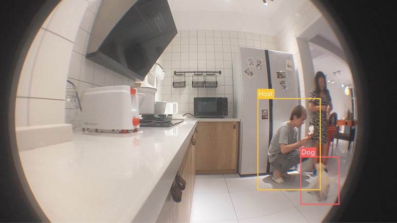
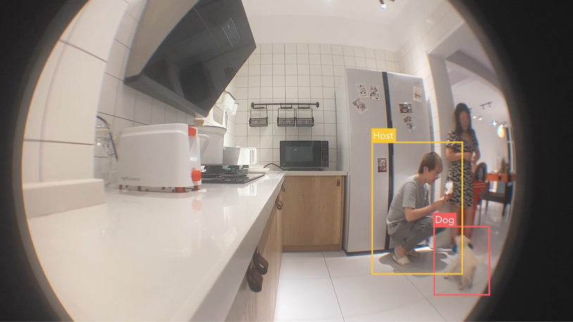
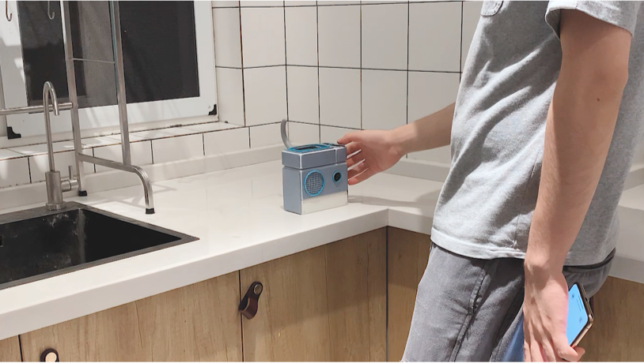
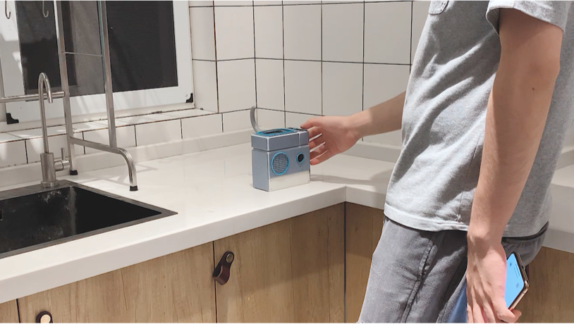

Domesticated Domesticator
Unit 5 Launch Pad
Product Design, Drexel
AE, PR - Real & Fictioanl Film
Python - Machine Learning prototype

As more artificial intelligence and machine learning algorithms become increasingly embedded in everyday objects, it will provoke changes in the way we interact with them.
While products so far have been designed and manufactured to serve a predefined use, we can now imagine a present and near-future world where smart objects as yet not finished entities that can evolve their behaviours by observing, reading and interpreting our habits.
Project is a fictional/experimental service and speculation, envisioning an unfinished smart object that actively upgrades itself to domesticate its user in order to grab the right to consume from the user and survive in the market.
This project investigates the space where AI and evolving physical forms meet in, shifting from human-centric to think from the perspective of an object, It turns around the practice of humans domesticating themselves through objects towards how future products could domesticate the domesticator of their own accord.
By doing this project, I trigger a critical reflection on the AI physical object design discourse and what this means in terms of the types of new domestication behaviours that can emerge, who is responsible for them and the ethical positions of designers who initiate these innovations. The speculative film endeavoured to portray around hopes and fears of AI embedded products, illustrating the enriched relationship possibilities for a new tomorrow.

 



 
